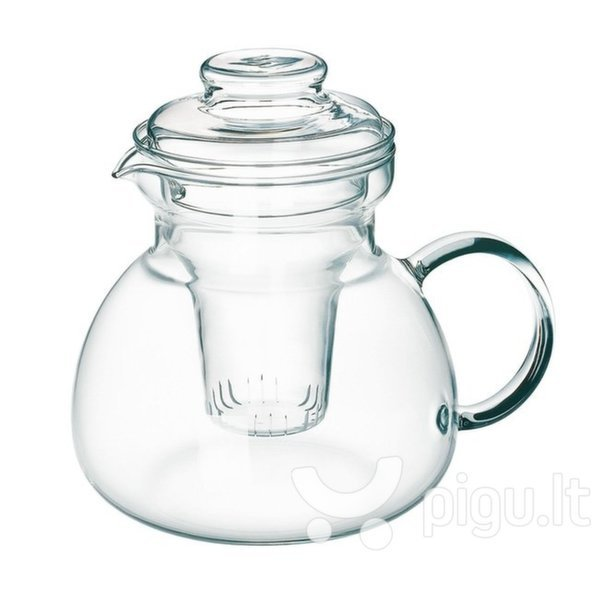

Kavinukai | Užpilami Arbatinukai | Iki -45% Akcija | ŠefoSvajonė.lt
- Arbatinukai, kavinukai | imperija.lt
Arbatinukas – indas, naudojamas arbatžolių ar kitų žolelių plikymui. Dabartiniai arbatinukai dažnai naudojami su arbatos sieteliu, skirtu košimui išpilant arbatą. Taip pat kartais naudojamas ir specialus medžiaginis uždangalas, skirtas sulaikyti šilumą, pagerinti plikymo procesą, saugoti arbatą nuo per greito atvėsimo. - Arbatinukai ir Kavinukai - Piguperku.lt
Piala Chaozhou Cha cha tszyui Feng Huang Dan Cong kinija Baltoji arbata Yla puerui Juodoji Baišasi arbata Plikymo arbatinukas Gui Hua Xiang yla skirta puerui ir kitoms pres Presuota Baišasi arbata Milk Oolong Tea Gaiwan Arbatinis rinkinys su žirgais Pialos molinės glazūruotos Taiping houkui Yla puerui medinė Yun Flavor Fujian Anxi Oolong ... - Arbatinukai gera kaina internetu | pigu.lt
Jeigu gyvenate vienas ar dviese nebūtina pirkti dviejų litrų virdulio, kuris labiau tinka didelėms šeimoms. Maži virduliai užvirina vandenį greičiau, tuo pačiu sunaudoja ir mažiau elektros energijos. 1,7 litro talpos elektriniai virduliai yra patys populiariausi, mažiau populiarūs dviejų puodelių virduliai. - Virduliai internetu pigiau | Virtuvės technika internetu ...
Virduliai, kavinukai ir arbatinukai iš Zana.lt ne tik puikiai atlieka funkciją, bet ir yra tikra virtuvės puošmena. Užsisakykite sau patikusį jau šiandien! - Atrask tikrą arbatos skonį! | ARBATINUKAI | Arbatos Pasaulis
Leopold Vienna arbatinukas-kavinukas Luxe 350ml LV01535 49, 99 € 5-8 d. d. (2) Gamintojas: Leopold Vienna ; Spalva: Sidabrinė, Bespalvis: Kavinukas - arbatinukas PUJADAS 0.8 L 15, 36 € 3-6 d. d. (2) Bialetti kavavirė Venus (4-iems puodeliams) 41, 99 ... - Ketaus arbatinukas prekių kainos nuo 26.08 € (15) | Kaina24.lt
Arbatinukas su filtru 1,5l King Hoff KH-4845 Arbatinukas su filtru 1,5l King Hoff KH-4845. Visi arbatos gurmanai žino – tik tinkamai paruoštas šis gėrimas gali suteikti tikrą malonumą! Todėl pasinaudokite proga įsigyti stilingą ir kokybišką arbatinuką. Visi arbatos gurmanai žino – tik... - Arbatinukas (362 ml) | SangaidaSangaida
AKSESUARAI - ARBATINUKAI. Atrask tikrą arbatos skonį! Informuojame, kad šioje svetainėje naudojami slapukai (angl. cookies). Paspaudę mygtuką „Sutinku“ arba naršydami toliau patvirtinsite savo sutikimą. - arbatinukas - išsamiai DELFI.lt
Kavinukai ir Užpilami Arbatinukai Įvairių Talpų ir Dydžių. Nuolaidos iki 80%, Lojalumo Premija, Dovanos Kiekvienam Užsakymui ir Nemokamas Pristatymas! - Žalvarinis arbatinukas / The Brass Teapot (2012) » Filmai ...
KELA arbatinukas su išimamu sieteliu "Ancona", 900 ml € 40,79 € 50,99 € 40,79 € 50,99 Į krepšelį-20% indukcija KELA espresso kavinukas "Latina", 4 puodeliai, 200 ml € 58,39 € 72,99 - ELEKTRINIAI VIRDULIAI – PLATUS PASIRINKIMAS || 1A.LT
Šis populiarus „BergHOFF“ arbatinukas – optimalaus dydžio, patvarus ir stilingas. Jame paruošite 2 – 3 puodelius mėgstamos arbatos. Aukštos kokybės nerūdijančiojo plieno korpusas užtikrins patvarumą, o nepriekaištingas dizainas derės kiekvienuose namuose.

Turite klausimų? +370 600 17027 Konsultuojame darbo dienomis 10:00 - 18:00 Paskyra Prisijungti Mano paskyra Pageidavimai Palyginimas Apsipirkimas Prisijungti / Registruotis 0 Item - 0,00 € Pageidavimai Palyginimas
KATEGORIJOS
Puodų Rinkiniai Keptuvės ir Kepimo Indai Keptuvės ir Blyninės Akmens Masės Keptuvės Grill Keptuvės Gilios Keptuvės Indukcinės Keptuvės WOK Keptuvės Keraminės Keptuvės Blyninės Dangčiai ir Rankenos Kepimo Indai ir Formos Kepimo Indai Kepimo Formos Puodai ir Troškintuvai Puodai Visi Puodai Garų Puodai Špižiniai Puodai Akmens Masės Puodai Indukciniai Puodai Didelės Talpos Puodai Greitpuodžiai Troškintuvai Troškintuvai Špižiniai Puodai Termosai Maistui ir Gėrimams Termosai Maistui Termosai Maistui Termosai su Indeliais Termosai Gėrimams Termosai Gėrimams Kelioniniai Termosai Termopuodeliai Maisto Dėžutės Maisto Dėžutės Virduliai, Kavinukai ir Arbatinukai Kavai Espresso Kavinukai Nuspaudžiami Kavinukai Turkiškai Kavai Virduliai ir Arbatinukai Virduliai su Švilpuku Elektriniai Virduliai Arbatinukai Puodeliai ir Servizai Puodeliai Puodelių Rinkiniai Prieskoniams, Duonai, Maistui Prieskoniams ir Maistui Druskos ir Pipirų Malūnėliai Druskinės ir Pipirinės Prieskoninės Sviestinės Cukrinės Duoninės ir Indai Maistui Medinės Duoninės Metalinės Duoninės Marmitai Indai Biriems Produktams Peiliai, Lentelės ir Tarkos Peiliai ir Rinkiniai Peilių rinkiniai Pavieniai Peiliai Stovai Peiliams Peilių Galąstuvai Peilių Galąstuvai Pjaustymo Lentos Pjaustymo Lentos Tarkos ir Pjaustyklės Tarkos Pjaustyklės Virtuviniai Įrankiai ir Indai Šakutės, Peiliai, Šaukštai Silikoniniai Įrankiai ir Formos Elektroniniai Prietaisai Žiūrėti daugiau Perjungti Navigacija ☰ Lauko kepsninės Išpardavimas Informacija klientams Prekių Pristatymas Apmokėjimo Būdai Prekių Grąžinimas Dažniausi Klausimai Kontaktai Nemokamas pristatymas perkant už 45€ ar daugiau Pagrindinis / Kavai ir Arbatai /Kavai ir Arbatai
Mėgaukites pačia skaniausia kava ir arbata. Talpūs ir itin patogūs kavinukai ir užpilami arbatinukai puikiai pasitarnaus vaišinant svečius gėrimais vienu užpylimu. Aukščiausios kokybės medžiagos, tvirta ir patvari konstrukcija, stiklinės kolbos, nekaistančios rankenos ir daugelis kitų privalumų. Ir nepamirškite - kaskart apsipirkdami dalyvaujate lojalumo programoje, kuri leis Jums susigrąžinti išleistus pinigus! O dovanos prie kiekvieno užsakymo ir nemokamas prekių pristatymas visoje Lietuvoje padarys apsipirkimą dar malonesniu!Rasta 211 prekės(-ių).
Rikiuoti pagal: Aktualumas Pavadinimas, A - Z Pavadinimas, Z - A Kaina, mažiausia - didžiausia Kaina, didžiausia - mažiausia Rodoma 1-48 iš 211 prekės(-ių) cached Pridėti Palyginimui Greita Peržiūra Pridėti prie PatinkančiųEspreso kavinukas Maestro 200 ml
Kaina 31,22 € Akcija cached Pridėti Palyginimui Greita Peržiūra Pridėti prie PatinkančiųEspreso kavinukas Maestro 400 ml
Kaina 29,72 € Bazinė kaina 34,97 € -15% Akcija cached Pridėti Palyginimui Greita Peržiūra Pridėti prie PatinkančiųEspreso kavinukas Maestro 600 ml
Kaina 30,11 € Bazinė kaina 38,60 € -22% Akcija cached Pridėti Palyginimui Greita Peržiūra Pridėti prie PatinkančiųVirdulys su švilpuku 7 sluoksnių dugnu
Kaina 46,80 € Bazinė kaina 52,00 € -10% cached Pridėti Palyginimui Greita Peržiūra Pridėti prie PatinkančiųVirdulys su Švilpuku 3 L Maestro
Kaina 40,00 € cached Pridėti Palyginimui Greita Peržiūra Pridėti prie PatinkančiųVirdulys su Švilpuku 3 L Maestro
Kaina 40,00 € cached Pridėti Palyginimui Greita Peržiūra Pridėti prie PatinkančiųNuspaudžiamas Kavinukas Berghoff 1.5L
Kaina 43,56 € cached Pridėti Palyginimui Greita Peržiūra Pridėti prie PatinkančiųNuspaudžiamas Kavinukas Berghoff 800ML
Kaina 35,09 € cached Pridėti Palyginimui Greita Peržiūra Pridėti prie PatinkančiųNuspaudžiamas Kavinukas Berghoff 1.0L
Kaina 30,25 € Akcija cached Pridėti Palyginimui Greita Peržiūra Pridėti prie PatinkančiųEspreso kavinukas 3 puodeliai, Cilio
Kaina 22,92 € Bazinė kaina 29,77 € -23% Akcija cached Pridėti Palyginimui Greita Peržiūra Pridėti prie PatinkančiųEspreso kavinukas 6 puodeliai, Cilio
Kaina 35,11 € Bazinė kaina 39,45 € -11% Akcija cached Pridėti Palyginimui Greita Peržiūra Pridėti prie PatinkančiųEspreso kavinukas 9 puodeliai, Cilio
Kaina 34,03 € Bazinė kaina 38,24 € -11% cached Pridėti Palyginimui Greita Peržiūra Pridėti prie PatinkančiųIndas Turkiškai Kavai Virti 800ML
Kaina 33,88 € cached Pridėti Palyginimui Greita Peržiūra Pridėti prie PatinkančiųIndas Turkiškai Kavai Virti 400ML
Kaina 24,20 € cached Pridėti Palyginimui Greita Peržiūra Pridėti prie PatinkančiųIndas Turkiškai Kavai Virti Berghoff 600ML
Kaina 19,36 € cached Pridėti Palyginimui Greita Peržiūra Pridėti prie PatinkančiųElektrinis Virdulys Maestro 1.8L
Kaina 38,60 € cached Pridėti Palyginimui Greita Peržiūra Pridėti prie PatinkančiųElektrinis Virdulys Maestro 1.7L
Kaina 48,28 € cached Pridėti Palyginimui Greita Peržiūra Pridėti prie PatinkančiųElektrinis virdulys 1.0l Maestro
Kaina 17,00 € Akcija cached Pridėti Palyginimui Greita Peržiūra Pridėti prie PatinkančiųEspresso kavinukas Edenberg 300 ml
Kaina 35,03 € Bazinė kaina 39,81 € -12% Akcija cached Pridėti Palyginimui Greita Peržiūra Pridėti prie PatinkančiųEspresso kavinukas Edel HOFF
Kaina 30,05 € Bazinė kaina 33,76 € -11%Galėsite pasimėgauti 6 (300 ml) arba 9 (450 ml) puodeliais stiprios, aromatingos espresso kavos. Ar tiesiog pasigaminsite porą didesnių puodelių... Akcija cached Pridėti Palyginimui Greita Peržiūra Pridėti prie Patinkančių
Espresso kavinukas Edenberg 450 ml / 9 puodeliai
Kaina 35,14 € Bazinė kaina 39,93 € -12% Akcija cached Pridėti Palyginimui Greita Peržiūra Pridėti prie PatinkančiųVirdulys su švilpuku Berghoff 2.5L
Kaina 52,50 € Bazinė kaina 75,00 € -30% Akcija cached Pridėti Palyginimui Greita Peržiūra Pridėti prie PatinkančiųVirdulys su Švilpuku Berghoff Lucia 2.5L
Kaina 61,83 € Bazinė kaina 88,33 € -30% cached Pridėti Palyginimui Greita Peržiūra Pridėti prie PatinkančiųVirdulys su Švilpuku 3 L, Maestro
Kaina 44,77 € cached Pridėti Palyginimui Greita Peržiūra Pridėti prie PatinkančiųNuspaudžiamas kavinukas
Kaina 20,78 € cached Pridėti Palyginimui Greita Peržiūra Pridėti prie PatinkančiųNuspaudžiamas kavinukas
Kaina 20,45 € cached Pridėti Palyginimui Greita Peržiūra Pridėti prie PatinkančiųNuspaudžiamas kavinukas
Kaina 18,03 € Akcija cached Pridėti Palyginimui Greita Peržiūra Pridėti prie PatinkančiųEspresso kavinukas Maestro 3 puodeliams
Kaina 21,89 € Bazinė kaina 27,71 € -21%
Akcija cached Pridėti Palyginimui Greita Peržiūra Pridėti prie Patinkančių
Espreso kavinukas 3 puodeliai, Cilio-Vokietija
Kaina 33,71 € Bazinė kaina 48,16 € -30% Akcija cached Pridėti Palyginimui Greita Peržiūra Pridėti prie PatinkančiųEspreso kavinukas 6 puodeliai, Cilio-Vokietija
Kaina 36,34 € Bazinė kaina 51,91 € -30% cached Pridėti Palyginimui Greita Peržiūra Pridėti prie PatinkančiųVirdulys su švilpuku FRICO 3.0L
Kaina 48,28 € cached Pridėti Palyginimui Greita Peržiūra Pridėti prie PatinkančiųVirdulys su švilpuku SAUBACH 3,5 L
Kaina 38,90 € cached Pridėti Palyginimui Greita Peržiūra Pridėti prie PatinkančiųVirdulys su Švilpuku Peterhof
Kaina 51,91 € cached Pridėti Palyginimui Greita Peržiūra Pridėti prie PatinkančiųElektrinis keraminis virdulys 1,5 l
Kaina 53,24 € cached Pridėti Palyginimui Greita Peržiūra Pridėti prie PatinkančiųElektrinis Virdulys 1L Maestro
Kaina 40,00 € cached Pridėti Palyginimui Greita Peržiūra Pridėti prie PatinkančiųElektrinis Virdulys Maestro
Kaina 54,45 € cached Pridėti Palyginimui Greita Peržiūra Pridėti prie PatinkančiųNuspaudžiamas kavinukas
Kaina 19,24 € cached Pridėti Palyginimui Greita Peržiūra Pridėti prie PatinkančiųKavinukas su stūmokliu 1.5 L
Kaina 39,93 € cached Pridėti Palyginimui Greita Peržiūra Pridėti prie PatinkančiųNuspaudžiamas kavinukas
Kaina 16,70 € cached Pridėti Palyginimui Greita Peržiūra Pridėti prie PatinkančiųKelioninis Termosas Berghoff Orion 1.0L
Kaina 45,98 € cached Pridėti Palyginimui Greita Peržiūra Pridėti prie PatinkančiųKelioninis Termosas Berghoff Orion 750ML
Kaina 42,35 € cached Pridėti Palyginimui Greita Peržiūra Pridėti prie PatinkančiųKelioninis Termosas Berghoff Orion 500ML
Kaina 31,46 € cached Pridėti Palyginimui Greita Peržiūra Pridėti prie PatinkančiųKelioninis termosas Berghoff Orion 1L
Kaina 118,58 € cached Pridėti Palyginimui Greita Peržiūra Pridėti prie PatinkančiųKelioninis termosas Berghoff Orion 750ML
Kaina 90,75 € cached Pridėti Palyginimui Greita Peržiūra Pridėti prie PatinkančiųKelioninis termosas Berghoff Orion 500ML
Kaina 54,45 € Akcija cached Pridėti Palyginimui Greita Peržiūra Pridėti prie PatinkančiųMaisto termosas 2.0L
Kaina 27,22 € Bazinė kaina 34,90 € -22% Akcija cached Pridėti Palyginimui Greita Peržiūra Pridėti prie PatinkančiųTermosas maistui Brun Hoff 1.0L
Kaina 26,18 € Bazinė kaina 34,90 € -25%
Akcija cached Pridėti Palyginimui Greita Peržiūra Pridėti prie Patinkančių
Maisto Termosas Berghoff Cook 350ML
Kaina 23,43 € Bazinė kaina 26,62 € -12% Rodoma 1-48 iš 211 prekės(-ių) Ankstesnis 1 2 3 … 5 Tęsti Atgal į viršų Puodų Rinkiniai
6 Dalių Puodų Rinkiniai 7 Dalių Puodų Rinkiniai 8 Dalių Puodų Rinkiniai 10 Dalių Puodų Rinkiniai 12 Dalių Puodų RinkiniaiKeptuvės
Gilios Keptuvės Grill Keptuvės Akmens Masės Keptuvės Špižinės Keptuvės Wok KeptuvėsĮvairūs Puodai
Garų Puodai Špižiniai Puodai Indukciniai Puodai Didelės Talpos Puodai GreitpuodžiaiKavai ir Arbatai
Maisto Termosai Termosai Gėrimams Espresso Kavinukai Virduliai su Švilpuku KavinukaiPrieskoniams
Pipirų Malūnėliai Druskos Malūnėliai Druskinės ir Pipirinės Prieskoninės CukrinėsPeiliai ir Tarkos
Peilių Rinkiniai Pavieniai Peiliai Galąstuvai Tarkos Pjaustymo LentosKepimui ir Troškinimui
Troškintuvai Kepimo Formos Marmitai Kepimo Indai Silikoninės Kepimo FormosĮrankiai
Stalo Įrankiai Virtuviniai Įrankiai Silikoniniai Įrankiai Pjaustyklės Stovai PeiliamsDangčiai ir Indai
Dubenėliai ir Indeliai Indai Biriems Produktams Dangčiai ir Rankenos Keptuvės Blynams 4 Dalių Puodų RinkiniaiGėrimams ir Maistui
Arbatinukai Turkiškai Kavai Elektroniniai Prietaisai Keraminiai Peiliai Duoninės
INFORMACIJA
Prekių Pristatymas Apmokėjimo Būdai Prekių Grąžinimas Prekių GarantijaPAGALBA
Kaip Pirkti? D.U.K. Apie Mus KontaktaiKLIENTAMS
Prisijungti / Registruotis Mano Užsakymai Mano Paskyra Patikusios PrekėsPAGALBA
Išpardavimas Naujos Prekės Perkamiausios Svetainės ŽemėlapisAkcijos ir Naujienos Facebook
Visos teisės saugomos 2012 - 2019 | MB "Šefo Svajonė" . E-parduotuvių nuoma: BananarentInformacija
Parduotuvės taisyklės Atšaukimo sąlygos PristatymasAkmens masės keptuvės | Keraminės keptuvės | Blyninės | Su nesvylančiu padengimu | Wok keptuvės | Grilio keptuvės | Top 5 keptuvės
4 dalių puodų rinkiniai | 6 dalių puodų rinkiniai | 7 dalių puodų rinkiniai | 8 dalių puodų rinkiniai | 12 dalių puodų rinkiniai | Akmens masės puodų rinkiniai | Top 5 perkamiausi puodų rinkiniai
Viskas pjaustymui | Peilių rinkiniai | Peilių galąstuvai | Pjaustymo lentos | Pjaustyklės | Tarkos ir trintuvės | Stovai peiliams | Top 5 peilių rinkiniai
Viskas kavai ir arbatai | Kavinukai | Virduliai su švilpuku | Termosai | Elektriniai virduliai | Maisto termosai | Arbatinukai | Užpilami arbatinukai | Kavos aparatai
Pavieniai puodai | Nerūdijančio plieno puodai | Garų puodai, garpuodžiai | Akmens masės puodai | Keraminiai puodai | Emaliu dengti puodai | Čenakinės | Troškintuvai
Duoninės | Medinės duoninės | Metalinės duoninės | Įvairūs priedai | Marmitai | Kepimo formos | Grūstuvės | Makaronų gaminimo mašinėlės | Elektriniai prietaisai | Virtuvės prietaisai
Virtuvės įrankiai | Stalo įrankiai | Virtuviniai įrankiai | Silikoniniai pagalbininkai | Maistinio silikono formos | Silikoniniai įrankiai
Prieskoninės | Sviestinės, cukrinės | Pipirų ir druskos malūnėliai | Viskas prieskoniams
Visos kainos yra be minėtų mokesčių



Mauris vulputate dolor
Rutrum fermentum nibh in augue praesent urna congue rutrum.
Etiam posuere